光源のちらつき（フリッカー）を簡易的に観測できるようにしてみました。
ちらつき (フリッカー:Flicker) は、電気用品安全法(PSE)で基準があります。 とはいえ、気が付かない程度にちらついているLED電灯が一定数あり、気になるため、これを調べてみることにします。
道具を作る
プロトタイプ
材料
- 照度センサ（フォトトランジスタ） ５６０ｎｍ ＮＪＬ７５０２Ｌ
- Lightning - 3.5 mmヘッドフォンジャックアダプタ
- ヘッドホン+マイク変換アダプタケーブル(3極メスx2-4極オス)
- 1kΩの抵抗
- iPhone/iPad
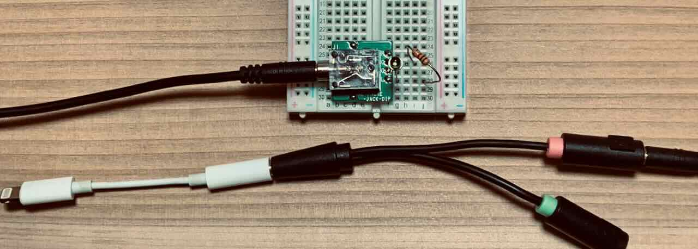
※ 試す場合は自己責任でお願いします
iPhoneのマイク端子からは2.7V程度の電圧が出ています。 ここにフォトトランジスタを挟み、光の強弱の変化を音信号として取り出します。 なお、iPhoneでマイクとして認識させるために、並列で1kΩの抵抗を入れています。
音信号として取得するため、直流成分を除いた交流の波形として見えています。 より正確に（例えば、 Percent Flicker, Flicker Index を参考に計算）するためにはArduinoやM5Stackなどで計測、算出できると良さそうです。 今回は、どの程度チラついているのか、振幅の度合いを大まかに知ることができればOKです。
測定
測定条件は特に規定していないため、参考まで。
T社LED電球
ちらつきはほとんど感じないLED電球。
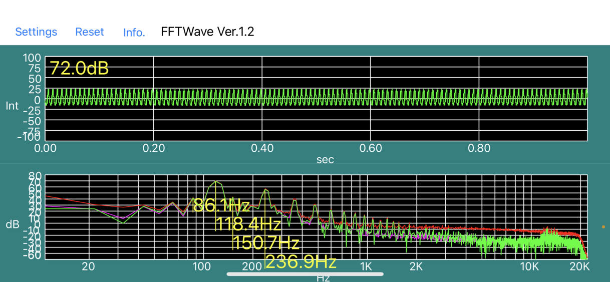
60Hz地域なので120Hz付近が目立っています。
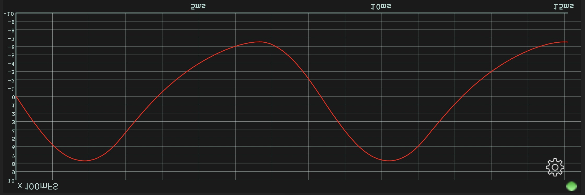
音はsin波っぽさがあって良い(?)

ちらつきが気になるLED電球
目視でちらつきが気になっているLED電球。
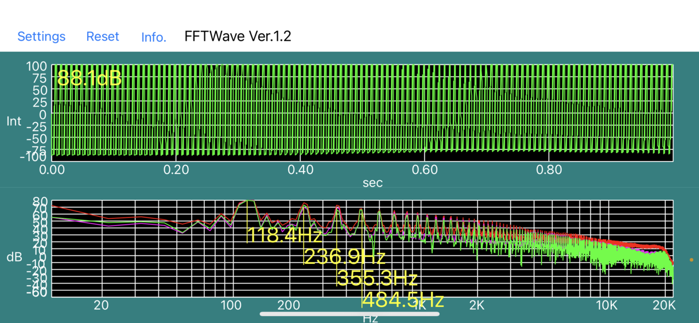
ここからもちらつきを感じる..
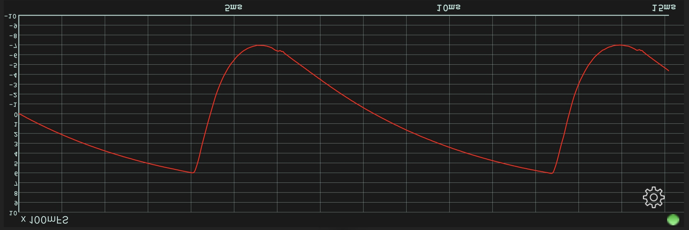
シンプルな全波整流器回路+コンデンサを使ったものか。
例:
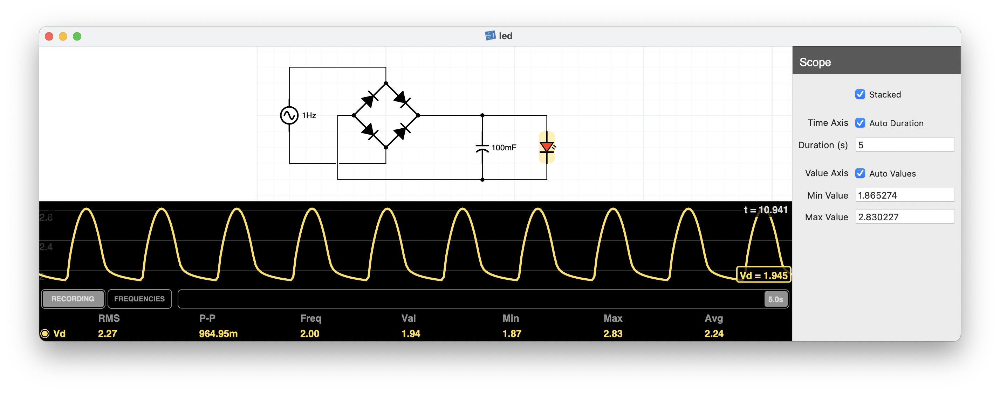
振幅が大きめ。

P社のLED電球
ちらつきは感じず、きちんと光ってる感のあるLED電球。

ちゃんとLEDドライバが入ってそう。 音を聞いても振幅は小さく、大きなノイズがある感じはしない。

小型化
4ピンのジャックを使って、その中に仕込みました。
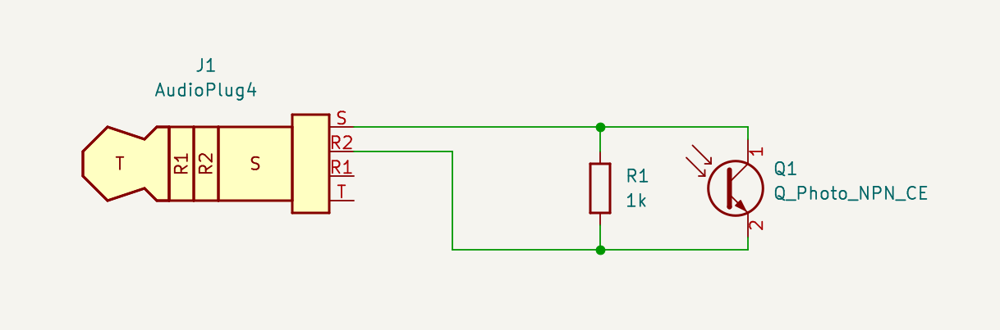 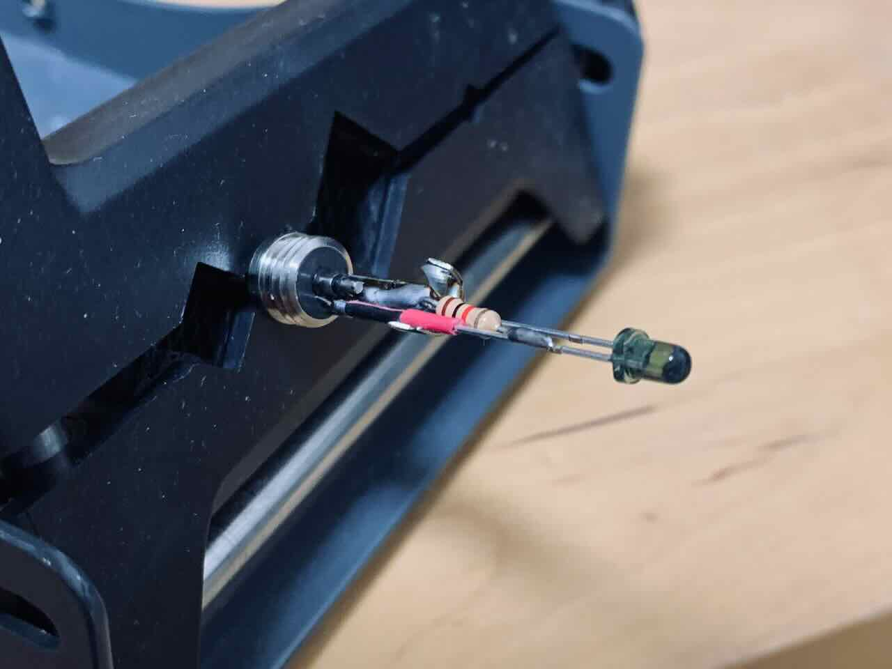 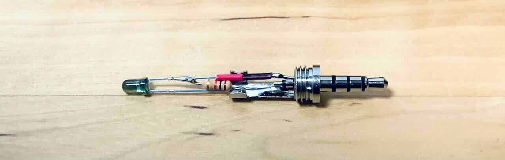 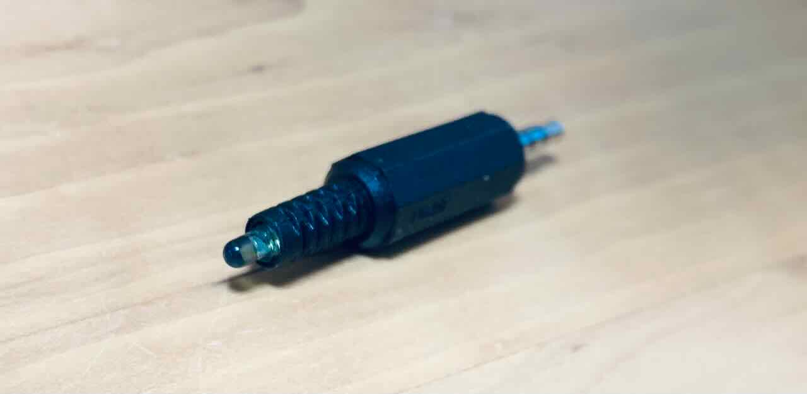 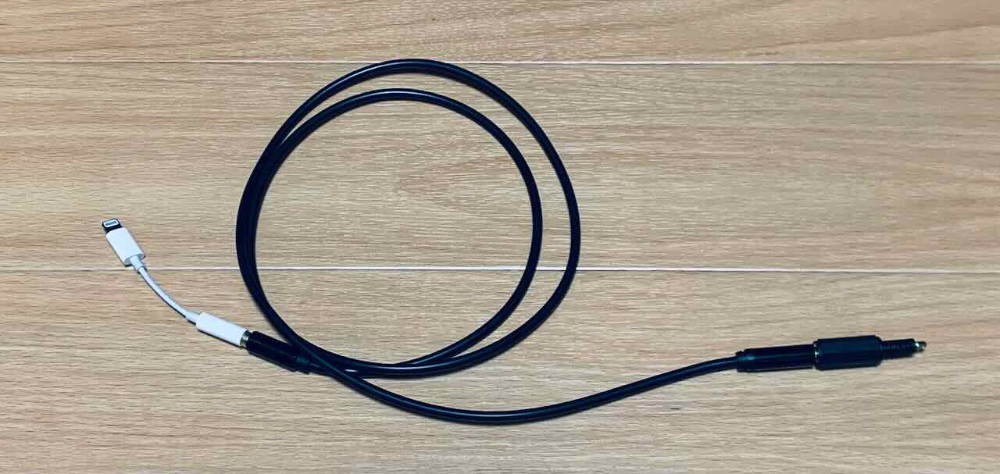
まとめ
フリッカーを簡易的に観測できるようにしました。 自宅で利用するLED光源を選定する上で、フリッカーが気になるため、このツールである程度評価できそうです。
おまけ
矩形波を観測してみる
デューティー比75% 500HzでLEDを点滅したものを観測するとこうなる
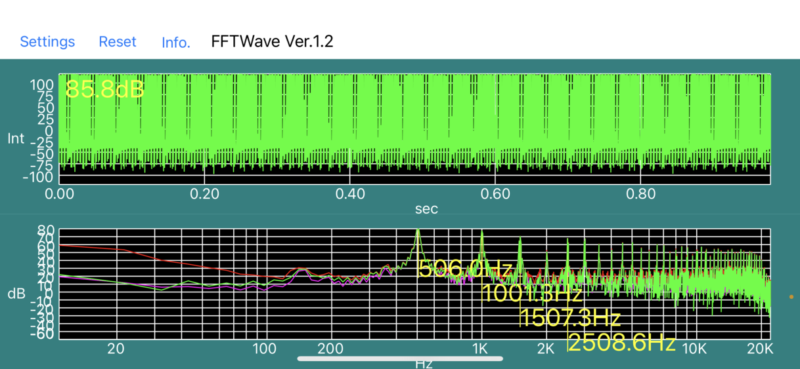 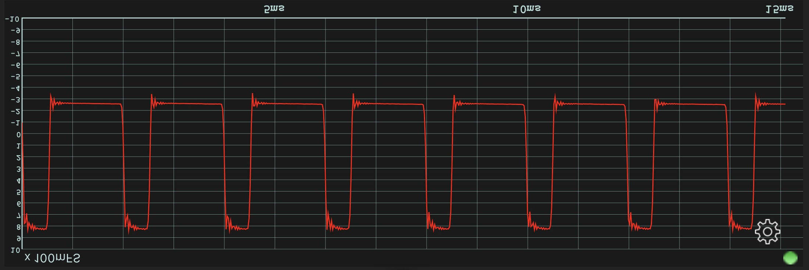
高周波は測れるのか
音として観測する中で、一応ナイキスト周波数あたりまで測定できた。この先は今の仕組みだと計測できない。が、そこまで測る必要はなさそう。
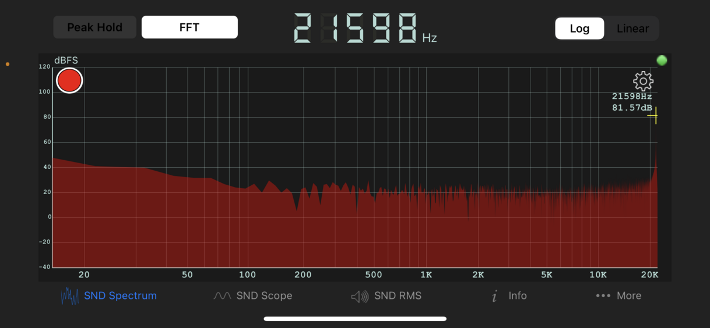
計算の参考になりそう
What is Flicker Metrics (Percent Flicker, Flicker Index, SVM) ?
— UPRtek (@UPRtek) March 24, 2017
Please check on UPRtek website FAQ : https://t.co/5OfGuGVLW3 pic.twitter.com/EmyVjyhRda